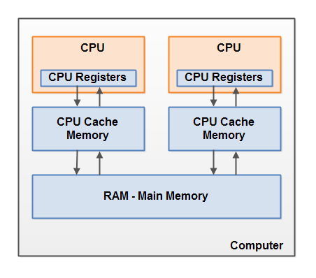

02nd Feb 2025
|| ॐ साई राम ||
Benefits of Multithreading
More explanation here -> Jenkov Blog.
Cons of Multithreading
More explanation here -> Jenkov Blog.
Concurrency Models
More Explanation -> Jenkov Blog
Race Conditions
Race conditions occur when two or more threads try to access a critical section of code (read data members) and their sequence of accessing the critical section makes a difference in the final result.
There are two types of race condition patterns -
To prevent the race conditions, we have to use synchronized blocks.
Thread Safety
Code that is safe to call by multiple threads is called Thread safe code.
If a resource is created, used and disposed within the control of the same thread, and never escapes the control of this thread, the use of that resource is thread safe.
Race conditions occur only if multiple threads are writing to the same resource. It does not occur if multiple threads are just reading the same resource.
We can create the shared objects between threads as immutable to achieve thread safety.
Java Memory Model
In java memory model, the different entities are stored at different locations -
| Entity | Location where it is stored |
|---|---|
| Local Variable (Primitive) | Thread Stack |
| Local Variable Reference (which is pointing to some object) | Thread Stack |
| Local Variable Object (which some reference is pointing to) | Heap Memory |
| Any Object | Heap Memory |
| Object Member Variables (Even if primitive types) | Heap Memory |
| Object Member Variables (Reference to another Object) | Heap Memory |
| Static class variables | Heap Memory |
| Static Class Definition | Heap Memory |
Hardware Memory

There are 3 components -